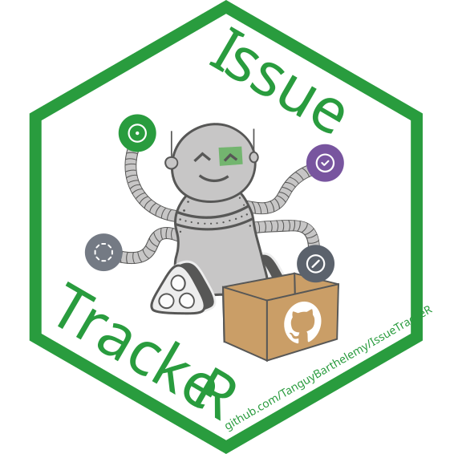
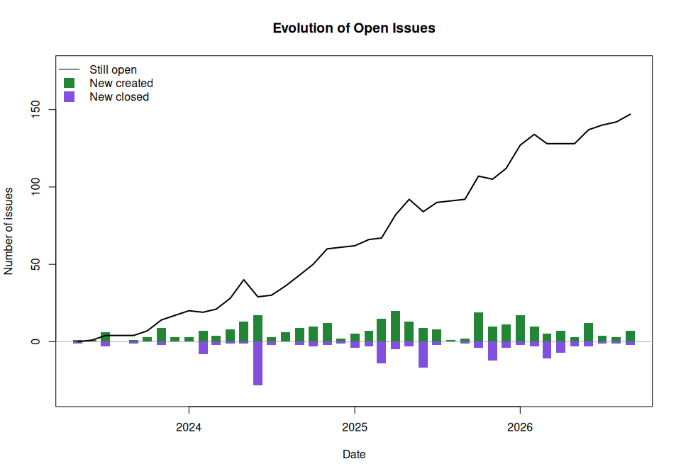
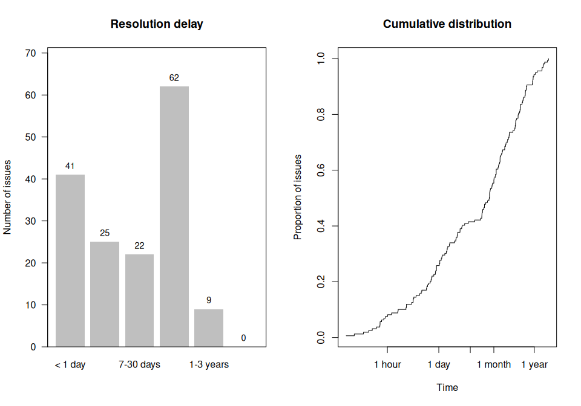
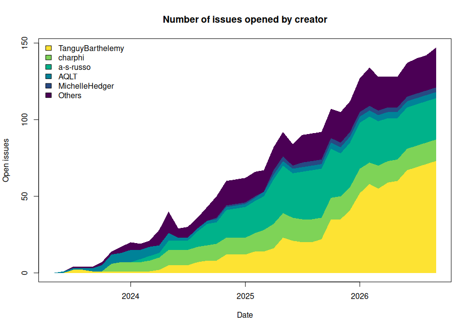

{IssueTrackeR} 


{IssueTrackeR} is an R package designed to retrieve and manage GitHub issues directly within R. This package allows users to efficiently track and handle issues from their GitHub repositories.
This package relies a lot on the package {gh} to use the GitHub API and retrieve data from GitHub.
Features
- Multi-source support: Fetch issues from GitHub, GitLab, or local YAML files.
- Visualization: Plot issue trends, resolution times, and backlog evolution.
- Save issues locally: Write the issues, labels and milestones locally to access it without connection.
Usage
library("IssueTrackeR")
#> Currently, the default options are:
#> - location for datasets is /tmp/RtmpMbmZ7e/data
#> - owner: rjdverse
#> - repo: rjdemetra
#>
#> Attaching package: 'IssueTrackeR'
#> The following objects are masked from 'package:base':
#>
#> append, sampleCreate a selector
# Configure {gitlabr} to retrieve issues from GitLab
gitlabr::set_gitlab_connection(
gitlab_url = "https://gitlab.com",
private_token = Sys.getenv("GITLAB_TRACTORTOM_API")
)
# Select repos from GitHub
selector1 <- init_selector(
source = "GitHub",
owner = "TanguyBarthelemy",
repo = "IssueTrackeR"
)
# Select project from GitLab
selector2 <- init_selector(
source = "GitLab",
project_id = c(51699988, 29346974, 15028532)
)
# Select list of issues from local files
selector3 <- init_selector(
source = "local",
file = file.path(
system.file("data_issues", package = "IssueTrackeR"),
"list_issues.yaml"
)
)
selector_issues <- merge_selector(selector1, selector2, selector3)
selector_other <- merge_selector(selector1, selector2)Get the issues
To get information from a repository, you can call the functions get_issues, get_labels and get_milestones:
my_issues <- get_issues(selector = selector_issues)
#> Repo: IssueTrackeR owner: TanguyBarthelemy
#> Project id: 51699988
#> Project id: 29346974
#> Project id: 15028532
#> The issues will be read from /usr/local/lib/R/site-library/IssueTrackeR/data_issues/list_issues.yaml.
my_labels <- get_labels(selector = selector_other)
#> Repo: IssueTrackeR owner: TanguyBarthelemy
#> Reading labels... Done!
#> 41 labels found.
#> Project id: 51699988
#> Project id: 29346974
#> Project id: 15028532
my_milestones <- get_milestones(selector = selector_other)
#> Repo: IssueTrackeR owner: TanguyBarthelemy
#> Reading milestones...
#> - v2.1.0 ... Done!
#> - v2.0.0 ... Done!
#> Done! 2 milestones found.
#> Project id: 51699988
#> Done! 2 milestones found.
#> Project id: 29346974
#> Done! 0 milestones found.
#> Project id: 15028532
#> Done! 0 milestones found.Save issues in local
You can also write the datasets in local with write_to_dataset():
write_to_dataset(
x = my_issues,
dataset_dir = tempdir()
)
#> The datasets will be exported to /tmp/RtmpMbmZ7e/list_issues.yaml.
write_to_dataset(
x = my_labels,
dataset_dir = tempdir()
)
#> The datasets will be exported to /tmp/RtmpMbmZ7e/list_labels.yaml.
write_to_dataset(
x = my_milestones,
dataset_dir = tempdir()
)
#> The datasets will be exported to /tmp/RtmpMbmZ7e/list_milestones.yaml.Filtering
You can filter the output based on its content using the with_text() function:
filtered_issues <- my_issues |>
with_labels("bug") |>
with_text("format") |>
with_comments()Visualisation
# Plot creation/closure rates
plot(my_issues, type = "created-closed")
# Plot resolution time distribution
plot(my_issues, type = "resolution-time")
# Plot by category (e.g., by creator, milestone, or repo)
plot(my_issues, type = "area-chart", by = "creator", n = 5)
Contributing
Contributions are welcome! Please feel free to submit a pull request or report any issues.
License
This project is licensed under the MIT License. See the LICENSE file for details.